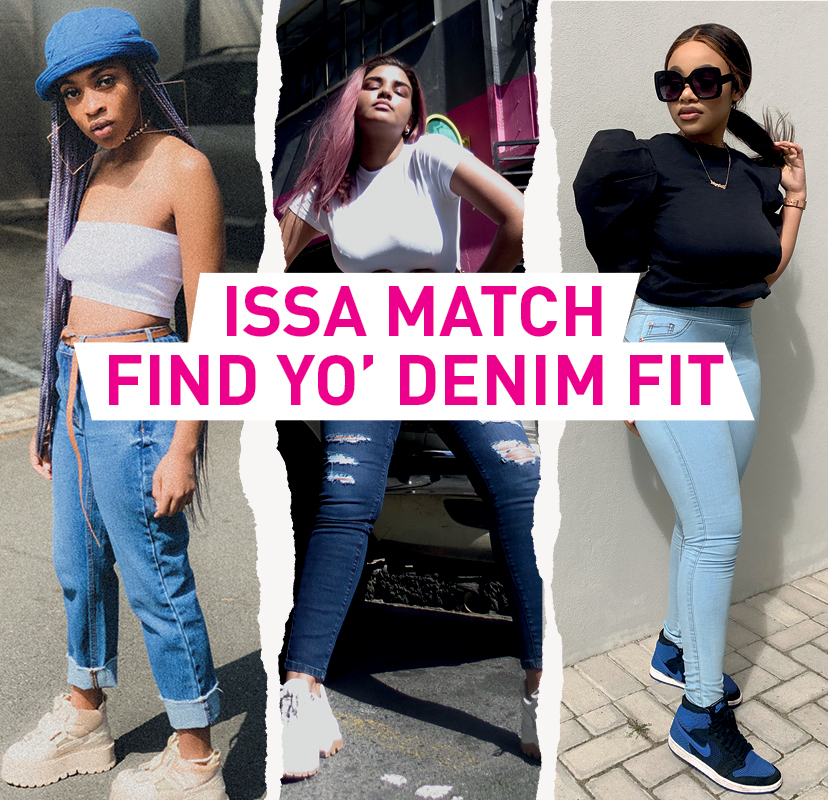

Foschini Group is a South African retail clothing company with more than 3,000 stores. It is headquartered in Parow near Cape Town. In 2015, the company bought the British apparel chain Phase Eight from TowerBrook Capital Partners, then valued at £300 million. In March 2016, Foschini Group acquired the British chain Whistles with its 46 retail shops.[5] In 2017, the company acquired Australian retail company Retail Apparel Group from Navis Capital Partners. In March 2020, Foschini Group announced that, during the on-going COVID-19 pandemic, the company would cease to pay rents for its retail locations during the resultant lockdowns in South Africa.
 Back